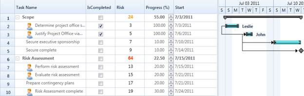

By default Gantt loads with the in-built columns that are mapped using the TaskAttributeMapping. You can add custom column you have defined to the Gantt Grid after the Gantt is loaded.
The following code will illustrate how to add custom columns to the Gantt Grid:
|
[C#]
/// Hooking loaded event of the Gantt this.Gantt.Loaded += new RoutedEventHandler(Gantt_Loaded);
/// Handling the loaded event of the Gantt void Gantt_Loaded(object sender, RoutedEventArgs e) { /// Removing and reinserting the progress column in position 2 this.Gantt.GanttGrid.Columns.RemoveAt(5); this.Gantt.GanttGrid.Columns.Insert(2, progColumn);
/// Creating a new custom column of Risk percentage GridTreeColumn column = new GridTreeColumn { MappingName = "RiskPercentage", HeaderText = "Risk", Width = 100, StyleInfo = new GridStyleInfo { CellType = "DataBoundTemplate", CellItemTemplateKey = "RiskCell" } };
this.Gantt.GanttGrid.Columns.Insert(2, column);
/// Repopulating the GanttGrid to reflect the new changes this.Gantt.GanttGrid.InternalGrid.PopulateGridNodes(true); this.Gantt.GanttGrid.InternalGrid.InvalidateCells(); }
|

Figure 41: Custom Columns
Samples Link
To view samples:
1. Open Syncfusion Dashboard.
2. Select User Interface > Silverlight.
3. Click Run Samples.
4. Navigate to Gantt > Table Customization item > Customized Table sample.